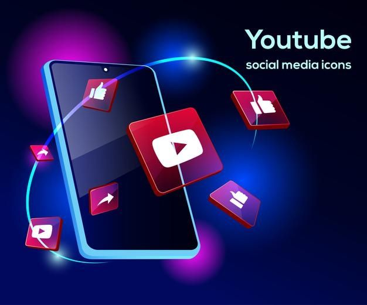
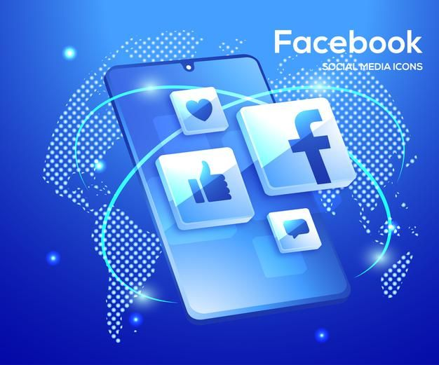
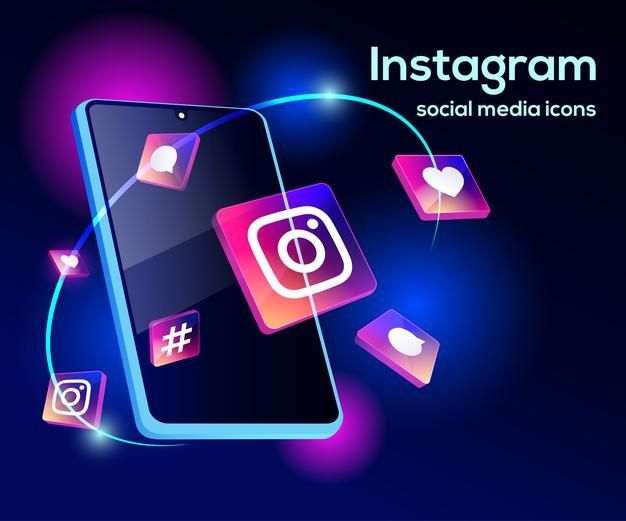
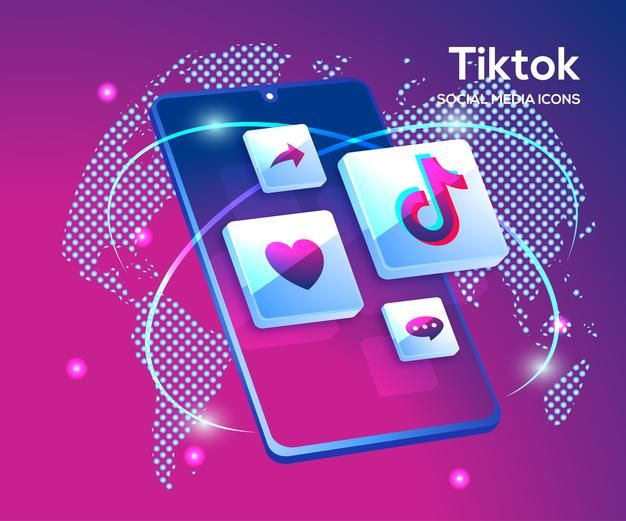

La información de las redes en esta pagina

YouTube (abreviado como YT) es una plataforma para compartir vídeos en línea estadounidense, propiedad de Google. YouTube
fue fundada el 14 de febrero de 2005 por Steve Chen, Chad Hurley y Jawed Karim, tres antiguos empleados de PayPal. Con
sede en San Bruno, California, es el segundo sitio web más visitado del mundo, después del propio Google. En enero de
2024, YouTube había alcanzado más de 2.7 mil millones de usuarios activos mensuales, que en conjunto veían más de mil
millones de horas de vídeo al día. En mayo de 2019 se subían videos a la plataforma a un ritmo de más de 500 horas de
contenido por minuto, y a mediados de 2024, había aproximadamente 14.8 mil millones de vídeos en total.
El 9 de octubre de 2006, Google LLC anunció la compra de YouTube por 1.65 mil millones de dólares estadounidenses en acciones
(equivalentes a 2.44 mil millones de dólares en 2025), siendo esta efectiva, tras la aprobación de los reguladores, el 13 de
noviembre de 2006. Google amplió el modelo de negocio de YouTube, pasando de generar ingresos únicamente a través de la
publicidad a ofrecer contenido de pago como películas y programación exclusiva producida específicamente para la plataforma.
También ofrece YouTube Premium, una opción de suscripción de pago para ver vídeos sin anuncios.

Facebook es un servicio de redes y medios sociales en línea estadounidense con sede en Menlo Park, California. Su sitio web
fue lanzado el 4 de febrero de 2004 por Mark Zuckerberg, junto con otros estudiantes de la Universidad de Harvard y compañeros
de habitación, Eduardo Saverin, Andrew McCollum, Dustin Moskovitz y Chris Hughes. Pertenece a la empresa Meta que incluye otros
servicios informáticos y de redes sociales. Está disponible en español desde el 11 de febrero de 2008.
Es una plataforma que funciona sobre una infraestructura de computación basada en sistemas GNU/Linux, usando el conjunto de
tecnologías LAMP, entre otras.
Inicialmente, los fundadores limitaron la membresía del sitio web a los estudiantes de Harvard, pero después lo ampliaron a
instituciones de educación superior en el área de Boston, en las escuelas de la Ivy League y en la Universidad Stanford.
Asimismo, gradualmente agregó soporte para estudiantes en varias otras universidades, y finalmente a estudiantes de secundaria.
Desde 2006, se le ha permitido convertirse en usuario registrado de Facebook a cualquier persona que diga tener al menos 13
años, aunque según las leyes locales este requisito varía. El nombre proviene de los directorios de fotos personales que a
menudo se entregan a estudiantes universitarios estadounidenses.
En febrero de 2012 salió a bolsa mediante una oferta pública de venta (OPV) y alcanzó una valoración de 104 000 millones de
dólares, la más alta para una empresa que empieza a cotizar. Comenzó a vender acciones al público tres meses después, pero
la mayoría de sus ingresos los obtiene de los anuncios que aparecen en pantalla.

Instagram (comúnmente abreviado como IG o Insta) es una aplicación y red social propiedad de Meta. Creada por Kevin Systrom
y Mike Krieger, fue lanzada el 6 de octubre de 2010. Ganó rápidamente popularidad, llegando a tener más de 100 millones de
usuarios activos en abril de 2012 y más de 300 millones en diciembre de 2014. Fue diseñada originalmente para iPhone y a su
vez estaba disponible para sus hermanos iPad y iPod con el sistema iOS 3.0.2 o superior. El 3 de abril de 2012, se publicó
una versión para Android y en 2013 se lanzó la versión beta para Windows Phone y oficial para Windows 10 en 2016.
Instagram también posee un medio de comunicación privado para hablar llamado Instagram Direct, y también cuenta con una función
llamada «Historias» (en inglés, Stories) donde todas las personas pueden publicar fotografías y vídeos temporales a su perfil,
agregando variados filtros y efectos, con una duración máxima de permanencia de 24 horas; además cuenta con otra opción que
permite guardar estas en el perfil permanentemente para que puedan ser vistos, como «Historias destacadas». Esta característica
permite a los usuarios una función de videos en directo, que también pueden ser guardados para ver con posterioridad y a través
de los que pueden interactuar con otros seguidores; compartir gifs; crear y editar reels e incluso hacer videollamadas, una función
muy utilizada por los usuarios
Según datos de DataReportal en enero de 2023 era la cuarta red social más utilizada a nivel mundial, con alrededor de 2000
millones de usuarios activos mensuales. En enero de 2024, la cuenta con más seguidores es la propia de Instagram, con 667 millones
de seguidores. El hombre más seguido es el futbolista portugués Cristiano Ronaldo con 619 millones de seguidores, mientras que la
mujer más seguida es la actriz y cantante estadounidense Selena Gomez con 429 millones de seguidores
En el mes de enero de 2011, Instagram Añadió hashtags para ayudar a los usuarios a descubrir las fotos que los demás compartían
sobre un mismo tema. Animaba así a sus usuarios a añadir hashtags relevantes y específicos, en lugar de etiquetar palabras como
foto con el objetivo de hacer las fotografías más populares, atraer a un mayor número de fanáticos y conseguir más me gusta.
WhatsApp Messenger (o simplemente WhatsApp) es una aplicación de mensaje para teléfonos inteligentes (aunque también cuenta
con versiones para computadora), propiedad de la empresa estadounidense Meta.
La aplicación permite enviar y recibir mensajes mediante Internet, lo que revoluciono la forma en la que nos comunicamos,
reemplazando eventualmente al servicio de mensajes cortos (SMS), además de imágenes, videos, audios, grabaciones de audio
(notas de voz), documentos, ubicaciones, contactos, gifs, stickers, así como llamadas y videollamadas con varios participantes
a la vez, entre otras funciones.
WhatsApp se integra automáticamente a la libreta de contactos, lo que lo diferencia de otras aplicaciones, ya que no es
necesario ingresar alguna contraseña o PIN para acceder al servicio. Aunque sigue siendo opcional poner un PIN para acceder
Icono de WhatsApp en un smartphone
Según datos de principios de 2023, es líder en mensajería instantánea en gran parte del mundo, en el que supera los 2.000
millones de usuarios, teniendo más usuarios que otras aplicaciones como Facebook Messenger o Telegram y Line, entre otros.
Si bien la aplicación se lanzó en 2009, principalmente para iOS, y un año después para Android, y al final llegó para Windows,
se popularizó masivamente desde el año 2012 aproximadamente, hasta la actualidad. WhatsApp desplazó al servicio de SMS,
revolucionando para siempre el servicio de mensajería instantánea gracias a la multiplicación de los teléfonos inteligentes
(smartphones) y del acceso a Internet.

TikTok es una aplicación y red social de origen chino para compartir videos cortos y en formato vertical, propiedad de la
empresa china ByteDance. La plataforma se utiliza para hacer una variedad de videos o recopilaciones de fotos, generalmente
en formato vertical (aunque desde diciembre de 2022 también se pueden ver en formato horizontal) y de corta duración, con un
mínimo de 1 segundo hasta un límite de 10 minutos. La aplicación cuenta con una gran variedad de géneros en sus videos, como
danzas y bailes, challenges o retos, videos de carácter cómico o humorístico o materiales educativos, entre muchos otros. Los
videos cortos no tienen un plazo determinado de reproducción, por lo tanto cuando acaban vuelven a empezar otra vez en un bucle
infinito.
TikTok es una versión internacional de Douyin (Chino: 抖音; pinyin: Dǒuyīn), que se lanzó originalmente en el mercado chino en
septiembre de 2016. Más tarde, TikTok se lanzó en 2017 para iOS y Android en la mayoría de los mercados fuera de la China
continental; sin embargo, solo estuvo disponible en todo el mundo después de fusionarse con otro servicio de redes
sociales, Musical.ly, el 2 de agosto de 2018.
TikTok y Douyin tienen casi la misma interfaz de usuario pero no tienen acceso al contenido del otro. Cada uno de sus servidores
está basado en el mercado donde la aplicación respectiva está disponible. Los dos productos son similares, pero las características
no son idénticas. Douyin incluye una función de búsqueda en video que puede buscar por la cara de las personas para ver más videos
de ellos y otras características como comprar, reservar hoteles y hacer reseñas geoetiquetadas. Desde su lanzamiento en
2016, TikTok/Douyin ganó rápidamente popularidad en Asia Oriental, Asia del Sur, el Sudeste Asiático, Estados Unidos,
Turquía, Rusia y otras partes del mundo. A octubre de 2020, TikTok superó los 2 mil millones de descargas móviles en todo el mundo.
https://metricool.com/es/tendencias-redes-sociales/
https://es.semrush.com/trending-websites/global/all
https://es.wikipedia.org/wiki/YouTube
https://es.wikipedia.org/wiki/Facebook
https://es.wikipedia.org/wiki/Instagram
https://es.wikipedia.org/wiki/WhatsApp
https://es.wikipedia.org/wiki/TikTok
https://politize.org.mx/desinformacion-en-las-redes-sociales-como-ocurre/
https://ayudaenaccion.org/blog/educacion/redes-sociales-y-jovenes-impacto-positivo-o-negativo/
https://nuevaescuelamexicana.org/redes-sociales/
https://concepto.de/redes-sociales/